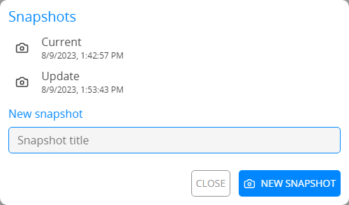
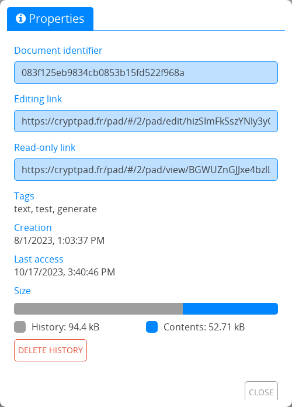

General#
Nowy dokument#
To create a new document:
From anywhere on CryptPad: Ctrl+e.
From the CryptDrive:
New in the toolbar.
New at the bottom of the file list/grid.
From a document: File > New.

Zalogowani użytkownicy
The creation screen offers a number of options when new documents are created.
Owned document: Create the new document as owner. If the document is created without an owner this setting cannot be modified.
Expiring document: Specify an expiry date after which the document will be destroyed. This setting cannot be modified after the document is created.
Add a password: Secure the sharing of the document with a password. This setting can be changed later in the Access menu.
Template: Choose to start from a blank document or use a template as a starting point.
Informacja
All templates saved in CryptDrive or in teams that you are part of appear on the creation screen. To save a document as a template:
In the open document: File > Save as template.
lub
In the CryptDrive: Drag the document to the Templates folder.
Saving#
Changes to documents are saved automatically. The status line in the document toolbar (under the title) confirms that changes have been saved.
Make a copy#
To duplicate a document:
From the document: File > Make a copy.
From the CryptDrive:
Right clickon the document > Make a copy.
Informacja
Make a copy can be used to purge history from a file, for example if you want to redact content from the history and/or make it completely unavailable.
Ostrzeżenie
Beware, an important caveat of using Make a copy is that you'll have to share again the document with your contacts or the persons you sent the link to.
Historia dokumentu#

The history toolbar#
The history of documents is saved and can be restored if needed. To view and restore the history of a document:
File > History.
Use the arrows to navigate:
and between each edit.
and between each author.
and between each editing session (when the same group of authors was connected to the document).
Restore the displayed version with Restore , or close the history without restoring with Close.
To save storage space, history can be deleted in the document’s properties Document owners
Informacja
The history functionality works slightly differently in the Arkusz application, due to the integration of OnlyOffice with CryptPad's encrypted real-time collaboration. Please refer to spreadsheet history for further details.
Version Links
To share a link to the displayed version of the history:
Share in the toolbar.
Select Contacts, Link or Embed similarly to when sharing a document.
Recipients will be able to view the selected version in read-only mode.
Ostrzeżenie
Sharing a link to a version also gives read-only access to all versions of the document.
Create a snapshot from history
To create a snapshot from the displayed version of the history:
button in the toolbar.
In the dialog, provide a name for the snapshot.
New Snapshot
Snapshots#

The snapshots dialog#
Snapshots are specific points in the history of a document that are named for easy reference.
To create a snapshot from the current state of the document:
File > Snapshots
In the dialog, provide a name for the snapshot.
New Snapshot
To create a snapshot from a version in the document's history see snapshot from history above.
To view and restore a snapshot:
File > Snapshots
In the dialog,
Clickon the snapshot in the list and View.The snapshot opens in a new window.
Restore or Close
To delete a snapshot:
File > Snapshots
In the dialog,
Clickon the snapshot in the list and Delete.
Properties#

To access the properties menu:
From the document: File > Properties.
From the CryptDrive:
Right clickon the document > Properties.
Available data:
Document identifier to share with instance administrators in case of an issue. (note that this does not expose the content of of the document).
Links to edit and view (depending on your permissions).
Dates of creation and last access.
Size.
The document size shows the proportions used for content and for history. To save storage space, delete the document’s history with Delete history and confirm. Document owners
Ostrzeżenie
Snapshots are part of the document's history. If you delete the history in the document's properties snapshots will be deleted as well.
Users and chat#
Interact with users connected to the same document through the user-list and the Chat.
To show/hide these panes:
for the user-list.
Chat for the chat.